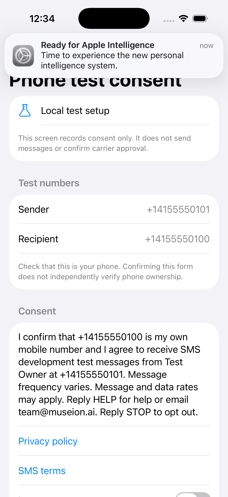
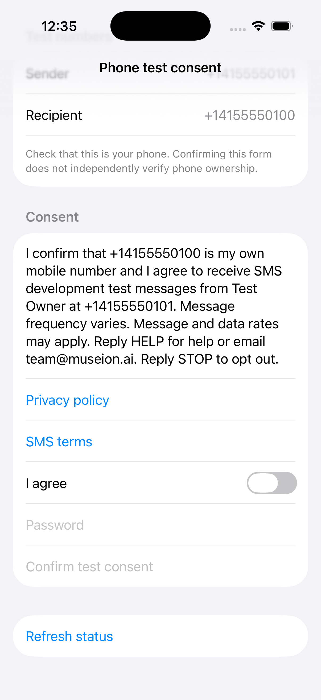
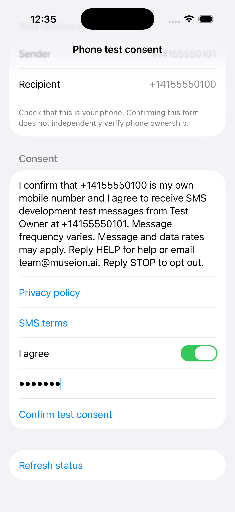
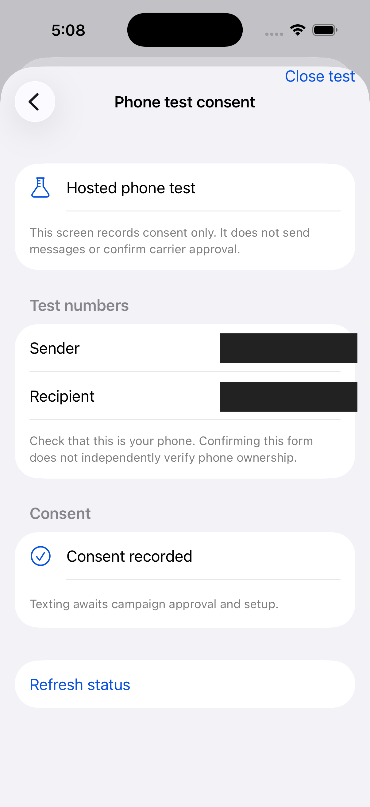

Owner-only development test
iPhone SMS consent evidence
The owner is the sole intended recipient of this development test. The owner completed consent in the private, authenticated iPhone app; texting remains disabled while campaign approval is pending.
How the owner opts in
- The owner signs in to the private development app and opens the phone test consent screen.
- The screen displays the sender, the owner's preconfigured mobile number, and a disclosure describing development-test texts, variable frequency, possible message and data rates, HELP and STOP, and the linked privacy policy and terms. The owner confirms the displayed mobile number is their own.
- The “I agree” control starts off. The owner turns it on, reauthenticates, and taps “Confirm test consent.” The app records consent for the configured sender and recipient and shows a confirmation.
This test does not use a website form, SMS keyword, paper form, or verbal opt-in. The public page is evidence of the private app flow; it is not itself an opt-in form.
The first three screenshots are representative simulator captures, not the owner's actual consent action. They use fictional numbers and an in-memory test service. The final screenshot is the owner's actual confirmation screen; both phone numbers are covered with solid redaction.



